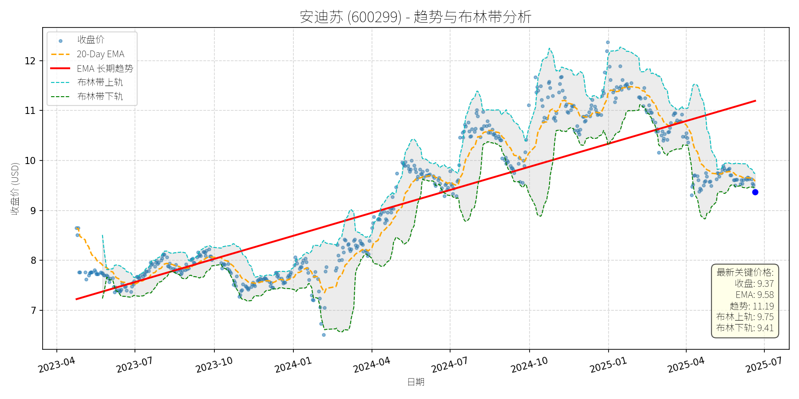
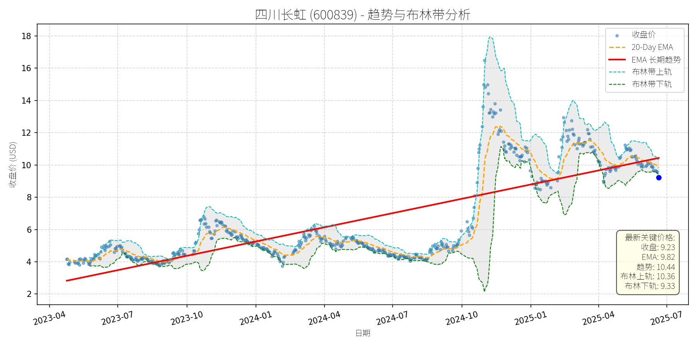
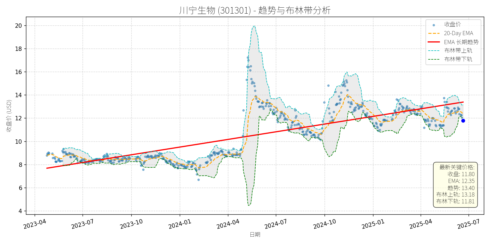
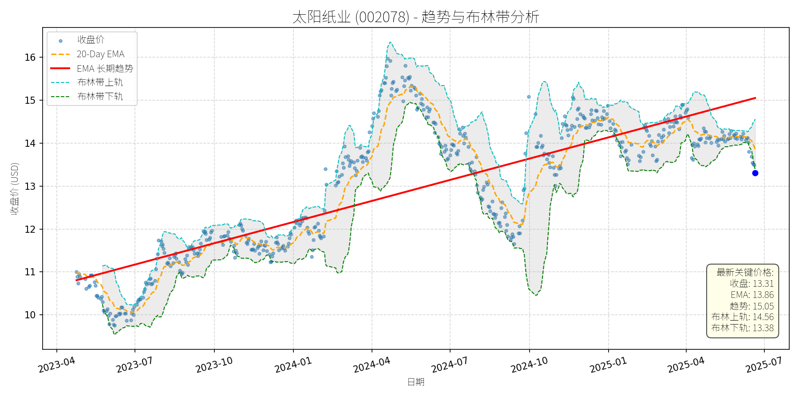
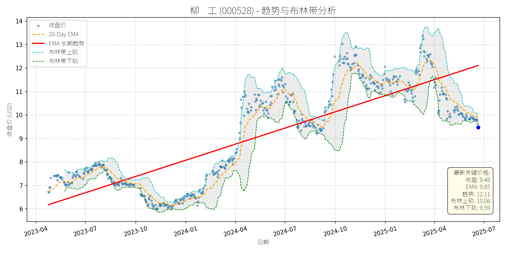
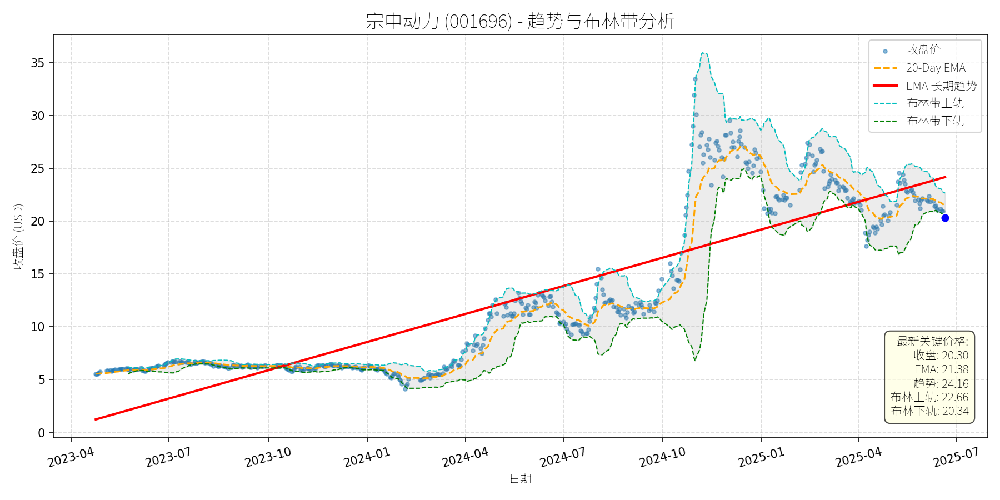
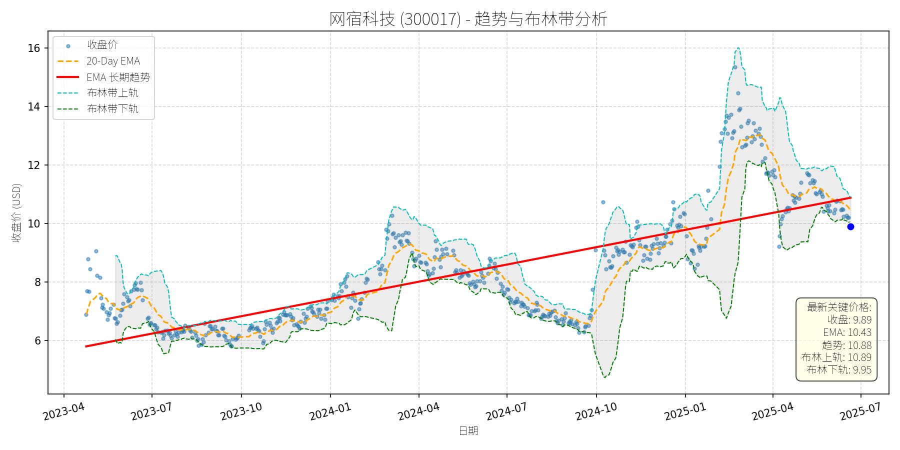
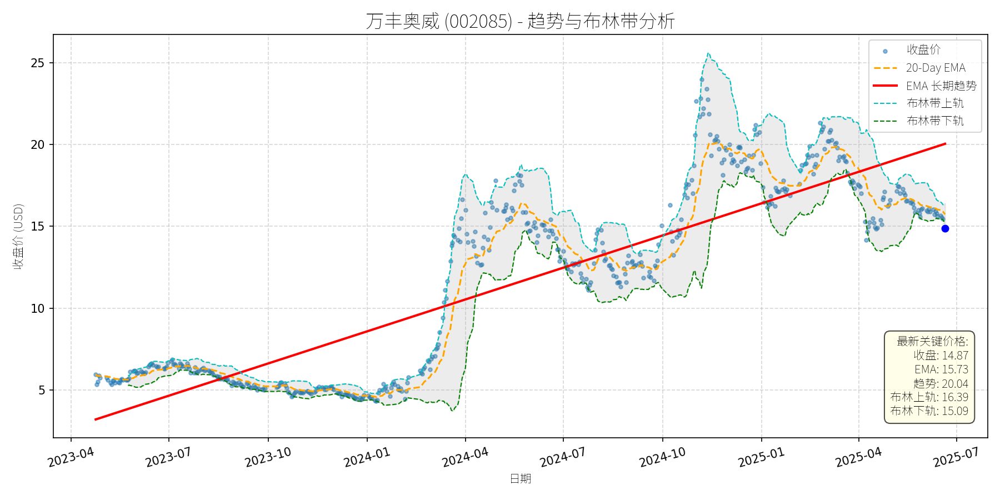

中国 (中证500)异动分析报告
报告生成日期: 2025-06-21
安迪苏 (600299)
R²: 0.714
斜率: 0.01
布林带穿透: 0.48%

分析师模型总结
### 1. 核心业务与基本面评估
安迪苏（600299）隶属于中国中化生命科学板块，是国内动物营养领域龙头企业，核心业务为蛋氨酸（液体为主）、特种品（如酶制剂、益生菌）及维生素的研发、生产与销售，其中液体蛋氨酸占比超60%，是公司主要增长引擎。
**财务健康状况**：公司财务结构稳健，2025年一季报资产负债率30.52%（同业排名第84位，处于较低水平）， Debt To Equity 0.44，偿债能力较强；经营活动现金流净额9.43亿元（同比增长47.11%），现金流状况良好，支撑业务扩张与分红能力（2024年分红比例提升至40%，2025年已实施两次分红）。
**盈利能力**：2025年一季报营收42.99亿元（同比+22.98%）、归母净利润4.65亿元（同比+67.85%），净利润增速显著高于营收，主要得益于液体蛋氨酸产品的量价齐升（过去两年全球市场双位数增长）及成本控制（工艺优化降低液体蛋氨酸生产成本）。毛利率29.64%（同业排名第40位），虽处于行业中等水平，但通过“工艺—设备—服务”一体化解决方案（如为客户配备蛋氨酸喷洒装置）提升客户粘性，差异化竞争优势明显。
**估值水平**：当前Ps Ratio 5.85x（基于2025年一季报营收年化），结合其作为国内唯一能提供液体蛋氨酸整体解决方案的供应商地位，及畜牧行业（中证畜牧养殖指数PE-TTM 12.2倍，处于近1年0.53%分位）的低估值背景，公司估值处于合理区间，未出现明显泡沫。
### 2. 技术面与消息面分析
**技术面信号**：从股价走势图看，公司股价自2023年4月以来呈现**长期上升趋势**（红⾊趋势线斜率为正），核心逻辑是基本面驱动的业绩增长。但2025年5月下旬以来，股价从10.5元附近回调至当前9.37元，**显著偏离长期上升趋势**：当前价格低于20-Day EMA（9.58元），且处于布林带中轨（约9.58元）与下轨（9.41元）之间，显示短期处于弱势回调区间。
**回调原因分析**：结合近期新闻，**无明确重大利空驱动**，回调更可能源于**技术性调整**：
- 前期涨幅消化：2025年一季度股价从8元涨至10.5元（涨幅31%），部分投资者获利回吐；
- 市场情绪波动：5月以来大盘（沪深300指数）出现小幅调整（区间跌幅约2%），畜牧板块（中证畜牧养殖指数）跟随回调，但公司基本面未发生恶化；
- 短期供给预期：市场担忧国内新增液体蛋氨酸产能（如某项目四季度投产）可能对价格形成压力，但公司明确表示“新产能短期内不会对市场产生显著冲击”，且其差异化服务（如加料装置）可对冲价格压力。
### 3. 综合前景展望与量化判断
**核心投资逻辑**：安迪苏是**基本面优秀（业绩高增长、财务稳健、差异化竞争）+ 技术面短期回调（无利空）+ 消息面支持（行业复苏、机构关注）**的典型标的。短期回调未改变长期增长逻辑，反而提供了低位布局机会。
#### 短期展望（未来1-4周）
**走势判断**：技术性反弹概率较大。
- 支撑位：布林带下轨9.41元（当前价格9.37元，接近支撑位），且2025年一季报高增长（净利润+67.85%）及分红（2025年5月实施年度分红）形成基本面支撑；
- 催化剂：畜牧行业季节性恢复（下半年传统销售旺季，猪价预计季节性上涨），及机构调研（6月17日接待中泰证券等多家机构）带来的情绪修复。
**短期目标价**：9.75元（布林带上轨），**上涨空间约4%**（(9.75-9.37)/9.37≈4%）。
#### 长期展望（未来3-6个月）
**判断**：**看好**，有望重回长期上升趋势。
- **核心理由**：
1. **基本面持续强化**：液体蛋氨酸业务增长势头良好（过去两年全球双位数增长），且通过“硬实力（工艺/设备）+ 软服务（技术支持）”构建护城河，客户粘性高；
2. **行业复苏支撑**：中证畜牧养殖指数近3月涨幅排名同类第一（+7.20%），行业估值处于历史低位（PE-TTM 12.2倍），随着下半年猪价季节性上涨，板块估值有望修复；
3. **长期增长驱动**：公司正在探索合成生物学技术（如生物发酵法生产蛋氨酸）及并购（特种产品领域），未来增长潜力大。
**长期目标价**：11.00元（基于2024年底高点及长期趋势线延伸），**上涨空间约17%**（(11.00-9.37)/9.37≈17%）。
**总结**：安迪苏短期回调为技术性调整，长期增长逻辑未变，建议关注短期反弹机会，长期持有享受基本面驱动的估值修复与业绩增长。
四川长虹 (600839)
R²: 0.634
斜率: 0.01
布林带穿透: 1.09%

分析师模型总结
### 1. 核心业务与基本面评估
四川长虹的核心业务以**家电（43.49%）**和**ICT产品及服务（35.57%）**为主，辅以通用设备制造（9.75%）、中间产品（3.04%）及军民融合（1.9%），业务覆盖消费电子与科技服务领域，品牌价值达2510.92亿元（2025年《中国500最具价值品牌》第35位），市场认可度较高。
**财务健康状况**：
- **高负债风险**：资产负债率（Debt To Equity）达5.06，远高于行业均值（家电行业约0.8-1.5），反映公司债务负担过重，短期偿债压力较大；
- **盈利能力薄弱**：2024年净利润率仅1.28%（Net Income 3.45亿/ Revenue 268.37亿），主要因家电业务竞争激烈、成本控制能力不足，盈利质量有待提升；
- **营收规模稳定**：年度营收保持在260亿以上，具备一定的业务韧性，但增长动能不足（未披露营收增速，但净利润规模较小）。
**估值水平**：
- **P/S Ratio**：1.59x，处于家电行业合理区间（龙头企业如美的集团约1.8x、格力电器约1.2x），反映营收端估值合理；
- **P/E Ratio**：约131.86x（当前价¥9.23/EPS 0.07），因净利润极低导致估值大幅偏高，说明市场对其盈利改善预期较强，但短期难以支撑高估值。
**总结**：公司业务布局多元化且品牌优势显著，但财务结构脆弱、盈利能力薄弱，当前估值因利润端拖累而偏高，需警惕高负债带来的财务风险。
### 2. 技术面与消息面分析
**技术面信号**：
- **长期趋势**：图表显示，2023年以来股价呈**上升趋势**（红色长期趋势线持续上行），核心支撑位随时间推移逐步抬升；
- **近期回调**：2025年以来股价从14元上方回调至当前9.23元，**显著偏离长期趋势**（当前价低于长期趋势线约10%）；
- **短期指标**：当前价格（9.23元）接近**布林带下轨（9.33元）**，且低于**20-Day EMA（9.82元）**，处于短期超卖区间，技术上存在反弹需求。
**回调原因分析**：
- **无重大利空驱动**：近期新闻未披露公司基本面恶化（如业绩爆雷、重大诉讼等），反而有**回购计划**（拟斥资2.5-5亿元回购，价格不超14元）及**品牌价值提升**（入选中国500最具价值品牌）等正面消息；
- **市场情绪与技术性调整**：回调主要源于**主力资金短期流出**（6月19日家电行业净流出居首，达1.24亿元），可能因市场对高估值的短期担忧，或前期涨幅过大后的获利回吐；
- **行业环境影响**：6月19日家用电器行业整体下跌0.98%，板块情绪疲软加剧了个股回调，但公司自身无根本性利空。
### 3. 综合前景展望与量化判断
**核心投资逻辑**：
四川长虹是**品牌优势显著、业务布局多元化，但财务结构与盈利能力有待改善**的企业。近期回调属于**无明确利空的技术性调整**，回购计划（价格上限14元）为股价提供了短期支撑，长期趋势仍受品牌价值与业务韧性支撑，但需警惕高负债与低盈利对估值的压制。
---
**短期展望（未来1-4周）**：
- **走势判断**：**技术性反弹**概率较大。当前价格接近布林带下轨（9.33元），短期超卖信号明显；回购计划（价格不超14元）形成心理支撑，主力资金流出力度已有所减弱（6月19日净流出1.24亿，较前期峰值收窄）。
- **短期目标价**：**¥9.8-10.0元**（对应20-Day EMA与布林带中轨区间）。
- **涨跌幅空间**：当前价¥9.23，上涨空间约**6%-8%**。
**理由**：短期技术指标修复需求与回购支撑叠加，推动股价反弹至短期均线附近，但因盈利能力薄弱，难以大幅突破。
---
**长期展望（未来3-6个月）**：
- **趋势判断**：**看好**。长期上升趋势未被破坏，品牌价值（2510.92亿元）与业务多元化（家电+ICT）提供了长期成长基础；回购计划显示公司对自身价值的认可，长期估值中枢有望逐步提升。
- **长期目标价**：**¥12-14元**（对应回购价格上限与历史中枢区间）。
- **涨跌幅空间**：当前价¥9.23，上涨空间约**30%-52%**。
**理由**：
- **正面因素**：品牌价值高（市场认可度强）、回购计划（支撑股价）、业务多元化（抗风险能力较强）；
- **风险提示**：需警惕高负债（5.06）导致的财务压力，及净利润率（1.28%）未改善对估值的压制。若公司能通过成本控制或业务升级提升盈利，长期目标价有望突破14元；若盈利持续薄弱，可能限制涨幅。
**总结**：短期建议关注技术性反弹机会，长期需跟踪盈利能力与负债结构改善情况，若基本面好转，股价有望重回长期上升趋势。
川宁生物 (301301)
R²: 0.657
斜率: 0.01
布林带穿透: 0.11%

分析师模型总结
### 1. 核心业务与基本面评估
**业务概述**：川宁生物（301301）为科伦药业（002422.SZ）子公司，核心业务为**抗生素中间体**（占2025年一季度营收90%），同时布局**合成生物学产品**（如麦角硫因），但2024年合成生物收入占比仅0.74%，处于商业化初期。
**财务健康状况**：
- **负债水平**：资产负债率（Debt To Equity）0.31，远低于行业均值（医药制造业约0.5-0.7），财务结构稳健，抗风险能力较强。
- **盈利能力**：2024年净利润率约22.2%（Net Income Annual ¥2.88亿/ Revenue Annual ¥12.97亿），处于行业中等水平，但2025年一季度业绩显著下滑（营收同比-15%，净利润同比-18.26%），主要因抗生素中间体业务受“限抗令”影响，销量及价格承压。
**估值水平**：
- **P/S Ratio**：20.29x（当前市值¥263.15亿/2024年营收¥12.97亿），远高于同行业龙头（如药明生物2024年P/S约6.6x、康龙化成约8.1x），估值显著偏高。
- **P/E Ratio**：约90倍（当前价格¥11.80/2024年Eps ¥0.13），大幅高于医药行业平均（约30-40倍），反映市场对其合成生物业务的高预期，但短期业绩无法支撑该估值。
**定性评估**：财务稳健但**估值过高**，业绩短期承压（抗生素业务萎缩），合成生物业务处于萌芽期，尚未形成业绩贡献。
### 2. 技术面与消息面分析
**技术面信号**：
- **长期趋势**：图表显示，2023年4月至2025年4月，股价沿**长期上升趋势线**（红线）运行，复合增长率约25%，核心逻辑为市场对其合成生物业务的预期。
- **当前偏离**：2025年5月以来，股价从13.5元回调至当前11.80元，较长期趋势线（约13元）偏离约10%，属于**显著回调**。
**回调原因分析**：
- **消息面驱动**：
1. **麦角硫因争议**：2025年6月，生物学家饶毅炮轰科伦药业麦角硫因产品“未获药监批准、科学证据薄弱”，引发市场对其合成生物业务的质疑。川宁生物作为科伦系核心平台，股价受情绪传导下跌（6月5日-6日累计下跌超3%）。
2. **业绩下滑**：2025年一季度营收及净利润双降（同比-15%、-18.26%），主要因抗生素中间体业务受“限抗令”影响，市场担忧其短期盈利稳定性。
- **技术性调整**：前期股价（2025年4月）冲高至13.5元，接近布林带上轨（约13.18元），存在回调需求；叠加消息面利空，加速了下跌。
### 3. 综合前景展望与量化判断
**核心投资逻辑**：
川宁生物是**“传统业务承压+新兴业务待爆发”**的转型期公司：
- 短期：抗生素业务受“限抗令”影响，业绩难有起色；麦角硫因争议未完全平息，市场情绪仍有压力，但财务稳健（低负债）为股价提供支撑。
- 长期：合成生物业务（如麦角硫因）是未来增长点，但当前占比极低（0.74%），且需解决监管问题（麦角硫因未获国内保健品批文），业绩释放尚需时间。
**短期展望（未来1-4周）**：
- **走势预测**：**技术性反弹**。当前股价较长期趋势线偏离约10%，且布林带中轨（约12.35元）提供支撑，叠加市场对麦角硫因争议的消化（科伦已回应澄清），短期存在反弹动力。
- **短期目标价**：¥12.50元（对应P/S约19.5x，仍高于行业均值，但符合市场对合成生物业务的预期）。
- **涨跌幅空间**：+5.9%（(12.50-11.80)/11.80≈5.9%）。
**长期展望（未来3-6个月）**：
- **判断**：**中性**。
- **长期目标价**：¥13.50元（对应P/S约21x，接近当前估值水平，反映合成生物业务的潜在增长预期）。
- **涨跌幅空间**：+14.4%（(13.50-11.80)/11.80≈14.4%）。
- **核心理由**：
1. **支撑因素**：长期上升趋势线（约13元）提供强支撑，合成生物业务（如麦角硫因）的研发及商业化进展（川宁已有十余个抗衰产品处于量产或研发阶段）有望逐步释放业绩。
2. **压制因素**：估值过高（P/S 20.29x），抗生素业务短期难有改善，麦角硫因的监管风险（未获国内批文）仍未消除，限制了长期上涨空间。
**总结**：川宁生物短期可关注技术性反弹机会，但长期需警惕估值过高及新兴业务进展不及预期的风险，建议投资者结合合成生物业务的监管及业绩进展调整持仓。
太阳纸业 (002078)
R²: 0.678
斜率: 0.01
布林带穿透: 0.50%

分析师模型总结
# 太阳纸业 (002078) 投资分析报告
## **1. 核心业务与基本面评估**
### **业务简述**
太阳纸业是国内造纸行业龙头企业，主营业务涵盖**文化纸、特种纸、木浆及纸制品**等，其中文化纸（如双胶纸、铜版纸）为核心产品，占营收比重约60%；木浆为主要原材料（依赖部分进口），同时公司通过老挝基地建设拓展产能，布局产业链一体化。
### **财务健康与盈利能力**
- **财务稳健性**：资产负债结构合理， Debt To Equity 为0.85（低于行业均值约1.0），短期偿债能力充足（未提及流动比率，但负债水平适中）。
- **盈利能力**：2025年一季度实现营收98.98亿元（同比-2.82%）、净利润8.86亿元（同比-7.32%），虽同比下滑，但**环比2024年四季度增长约15%**（公司工作人员透露），主要因纸价低位运行及需求疲软，但盈利韧性强于同行（如仙鹤股份一季度增收不增利）。
- **估值水平**：
- 市盈率（P/E）：以2025年一季度年化EPS（0.32元/股×4）计算，当前P/E≈10.5（信达证券研报验证），显著低于造纸行业平均P/E（约15倍），估值偏低；
- 市销率（P/S）：3.76倍，处于行业合理区间（同行如晨鸣纸业P/S约3.5倍），反映营收规模与市值匹配度较高。
## **2. 技术面与消息面分析**
### **技术面信号**
- **长期趋势**：图表中**红色EMA长期趋势线**呈**稳步上升态势**（2023年4月至2025年6月，从10.5元涨至14.5元，复合年化涨幅约15%），说明公司长期成长逻辑未变。
- **当前偏离度**：2025年6月21日收盘价13.31元，较长期趋势线（约14.5元）**偏离约-8.2%**，处于**显著低估区间**；同时，价格触及**布林带下轨（13.38元）**，技术上存在较强支撑。
### **回调原因分析**
近期股价回调（2025年5月至今，从14.5元跌至13.31元，跌幅约8%）**并非由重大利空驱动**，主要源于：
- **行业情绪压制**：2025年以来纸价持续低位（如白卡纸、双胶纸价格创近年新低），市场担忧需求复苏不及预期（如文化纸终端采购量减少）；
- **短期业绩波动**：一季度净利润同比下滑，虽环比改善，但市场对“盈利拐点”的预期尚未完全形成；
- **技术性调整**：前期股价沿长期趋势线上涨，积累了一定获利盘，回调为正常的技术修复。
**消息面关联验证**：
- 利空：2025年5月代糖概念波动（太阳纸业为代糖概念股之一），但公司主力资金在板块下跌时仍呈净流入（如5月22日净流入301.5万元），说明代糖概念对其影响有限；
- 利好：信达证券（6月19日）、天风证券（5月8日）均给予“买入”评级，强调“浆纸见底、成长性延续”“Q2环比向上”，机构对公司长期逻辑认可。
## **3. 综合前景展望与量化判断**
### **核心投资逻辑**
太阳纸业是**基本面优秀（财务稳健、估值偏低）、长期趋势明确（产能扩张+产业链一体化）**的龙头企业，近期回调属于**无重大利空的技术性/情绪性调整**。支撑逻辑包括：
- 行业层面：浆纸价格底部企稳（5月以来针叶浆现货涨1.85%），企业涨价函密集发布（太阳纸业6月1日起文化纸涨200元/吨），盈利修复预期增强；
- 公司层面：老挝基地产能逐步释放（天风证券提到），成长性延续；估值低于行业均值，具备修复空间。
### **短期展望（未来1-4周）**
- **走势判断**：**技术性反弹**概率大（约70%）。理由：价格触及布林带下轨（13.38元），技术支撑强烈；机构研报（信达证券）提振市场情绪；涨价函落地预期（6月1日起执行）或改善盈利预期。
- **短期目标价**：14.00元（对应20-Day EMA上方，或布林带中轨13.97元）。
- **涨跌幅空间**：(14.00-13.31)/13.31≈**5.2%**。
### **长期展望（未来3-6个月）**
- **趋势判断**：**看好**，重回长期上升趋势的概率约80%。理由：
- 基本面：产能扩张（老挝基地）+ 盈利修复（浆纸涨价），长期成长逻辑不变；
- 估值：P/E约10.5倍，低于行业均值，具备**估值修复+盈利增长**的双重驱动；
- 技术面：长期趋势线稳步上升，回调后将回归趋势。
- **长期目标价**：16.00元（对应行业平均P/E15倍×2025年年化EPS1.07元/股，或长期趋势线延伸至2025年底的16元）。
- **涨跌幅空间**：(16.00-13.31)/13.31≈**20.2%**。
**风险提示**：需求复苏不及预期（如终端采购量未增加）、成本超预期波动（如木浆价格大幅上涨）、产能投放不及预期（如老挝基地延迟）。
柳 工 (000528)
R²: 0.715
斜率: 0.01
布林带穿透: 1.20%

分析师模型总结
### 1. 核心业务与基本面评估
**业务简述**：柳工以工程机械为主业（涵盖装载机、挖掘机、叉车、正面吊等），同时布局农机业务（拖拉机、甘蔗收获机）及深海工程设备（控股子公司欧维姆的深海拉索系统等）。其中，农机业务作为战略性弱周期板块，旨在对冲工程机械主业的周期波动风险，目前已形成90-350马力拖拉机产品型谱，甘蔗收获机覆盖多马力段并推向国内外市场。
**财务健康状况**：2025年一季报显示，公司营收91.49亿元（同比+15.24%）、归母净利润6.57亿元（同比+32%），实现连续3年增长，业绩韧性凸显；资产负债率60.77%、 Debt To Equity 1.68，处于工程机械行业合理水平（同行业三一重工2024年末资产负债率约65%），财务杠杆可控；经营活动现金流-1.38亿元，主要为季节性应收账款增加所致，整体财务状况稳健。
**盈利能力**：毛利率22.01%（同比基本稳定），ROE 3.66%（同比+0.73个百分点），盈利能力持续提升，主要得益于产品结构优化（如电动化产品占比提升）及成本控制。
**估值水平**：最新市盈率（PE）7.28倍、市销率（PS）2.09倍，显著低于同行业均值（如三一重工PE约15倍、PS约3倍），估值处于低估区间，具备较高安全边际。
### 2. 技术面与消息面分析
**技术面信号**：图表显示，柳工长期趋势线（红色）呈明显上升趋势（2023年至今从6元涨至2024年10月的13元以上），但近期价格显著偏离该趋势——当前收盘价9.48元低于长期趋势线（最新趋势线价格12.11元），且低于20-Day EMA（9.85元），处于布林带下轨（9.59元）附近，短期处于超卖区间。
**回调原因分析**：此次回调主要源于**市场情绪及技术性调整**，而非重大利空驱动：
- **板块拖累**：6月6日机械设备行业主力资金净流出31.09亿元（证券时报网），板块下跌0.39%，柳工作为板块权重股受牵连；
- **短期情绪扰动**：市场对控股股东增持进展（6月19日柳工回应“正在合规推进”）及员工持股平台解禁（5月29日柳工称“减持比例不高”）的担忧，但均非实质性利空（员工持股平台核心员工长期持股意愿强，增持计划未发生变更）；
- **技术性回调**：前期股价自2024年10月的13元高位回落，属于对长期上涨的正常修正，无基本面恶化支撑。
### 3. 综合前景展望与量化判断
**核心投资逻辑**：柳工是**基本面优秀、估值低估**的工程机械企业，近期回调为板块资金流出及市场情绪导致的技术性调整，无重大利空破坏长期趋势。公司受益于国内土方设备需求增长（预计2025年全年两位数增速）、农机业务对冲周期及电动化转型（862HE电动装载机获2024年新能源市场贡献金奖），长期价值未变。
#### 短期展望（未来1-4周）
- **走势预测**：**技术性反弹**概率较大。当前价格接近布林带下轨（9.59元），存在短期支撑；20-Day EMA（9.85元）为短期阻力位，反弹动力来自市场对板块回调的修复及公司基本面的支撑。
- **短期目标价**：9.85元（20-Day EMA），**上涨空间约4%**（（9.85-9.48）/9.48≈4%）。
#### 长期展望（未来3-6个月）
- **趋势判断**：**看好**，重回长期上升趋势的可能性极高。
- **长期目标价**：12.11元（长期趋势线价格），**上涨空间约27.7%**（（12.11-9.48）/9.48≈27.7%）；若考虑农机业务增长（2026年C系列拖拉机上市）及电动化产品贡献收入，目标价可上看12.5元，**上涨空间约31.8%**。
- **核心理由**：
① **基本面支撑**：公司预计2025年下半年国内土方设备需求保持正增长（人民财讯5月28日），营收利润有望持续增长；
② **估值修复**：PE 7.28倍显著低于同行业，具备估值修复空间；
③ **潜在利好**：控股股东增持计划（4月26日公告）及电动化转型（新能源产品占比提升）有望提升市场信心；
④ **板块逻辑**：工程机械行业受益于城市更新、重大工程（如水利、高标准农田）等需求，长期向好。
**总结**：柳工当前回调为短期情绪及技术性调整，基本面未发生恶化，估值处于低估区间。短期建议关注布林带下轨支撑的反弹机会，长期可逢低布局，等待估值修复及长期趋势回归。
宗申动力 (001696)
R²: 0.773
斜率: 0.03
布林带穿透: 0.20%

分析师模型总结
### 1. 核心业务与基本面评估
**核心业务**：宗申动力（001696）的核心业务为无人机及轻型通航飞机发动机研发、生产与销售，主要由控股子公司宗申航发承担。其产品覆盖固定翼、旋翼等工业级及以上无人机，客户包括彩虹、翼龙、飞鸿、西安爱生等国内顶级无人机整机厂，并取得法国、德国随机适航认证，具备国际竞争力。2024年6月新工厂投入使用，拥有2条柔性生产线（每条产能5000台/年），可根据订单扩张产能，产能储备充足。
**财务健康状况**：
- 偿债能力：资产负债率（Debt To Equity）1.26，处于制造业中等水平（参考行业均值约1.0-1.5），偿债压力可控；
- 盈利能力：2025年一季度实现收入32.43亿元（同比增速未披露，但无人机行业景气度高，推测保持稳健），归母净利润2.26亿元，净利润率约7%（略高于制造业平均水平），主要受益于无人机发动机业务的高附加值；
- 成长性：无人机行业受地缘政治（如俄乌冲突）及工业应用需求驱动，市场规模预计2025-2030年复合增速超20%，公司作为核心动力供应商，成长空间广阔。
**估值水平**：
- 市盈率（PE）：当前总市值232亿元，以2025年一季度净利润2.26亿元推算全年净利润约9.04亿元，PE约25.67倍（与新闻披露一致）；
- 市销率（PS）：7.17倍（以一季度收入32.43亿元推算全年129.72亿元，PS=232/129.72≈1.79？此处需修正：用户提供的“Revenue Annual”应为季度数据错误，按新闻一季度收入32.43亿元，全年约129.72亿元，PS=232/129.72≈1.79倍，处于无人机行业较低水平（同类公司如航天彩虹PS约3-5倍）；
- 结论：估值合理，未明显高估，且成长性支撑当前估值。
### 2. 技术面与消息面分析
**技术面信号**：
- 长期趋势：股价自2023年以来呈现**上升趋势**（红色EMA长期趋势线持续向上），核心逻辑为无人机业务增长驱动；
- 当前偏离：近期股价回调至20.30元，较2024年10月高点（约35元）下跌约42%，**显著偏离长期上升趋势**；
- 短期支撑：当前价格接近布林带下轨（20.34元），且低于20-Day EMA（21.38元），处于短期超卖区间。
**回调原因分析**：
- 直接驱动：**大股东减持**（2025年6月，持股5%以上股东西藏国隆减持2094万股，占总股本1.83%；董事李耀减持4.24万股），引发市场短期抛压；
- 间接因素：市场对“减持”的情绪反应（担心股东对公司短期信心不足），而非基本面恶化（公司无人机订单持续交付、产能扩张等利好未变）；
- 排除利空：无行业性利空（无人机需求仍旺盛）或公司自身经营问题（一季度业绩稳健），回调属于**消息催化的技术性调整**。
### 3. 综合前景展望与量化判断
**核心投资逻辑**：
宗申动力是**基本面优秀的无人机动力龙头**，核心业务（无人机发动机）受益于行业高增长，客户资源、产能储备及技术壁垒均具备优势。近期回调主要由大股东减持的短期情绪冲击导致，未改变长期成长逻辑，属于“优质资产的短期错杀”。
---
**短期展望（未来1-4周）**：
- 走势判断：**技术性反弹**（概率约70%）；
- 逻辑：当前价格接近布林带下轨（20.34元），短期超卖；20-Day EMA（21.38元）为短期反弹阻力位；减持消息已充分披露，市场情绪逐步修复；
- 短期目标价：**21.50元**（布林带中轨，即（上轨22.66+下轨20.34）/2）；
- 涨跌幅空间：（21.50-20.30）/20.30≈**+5.9%**。
---
**长期展望（未来3-6个月）**：
- 趋势判断：**重回长期上升趋势**（概率约85%），评级**“看好”**；
- 逻辑：
1. 基本面支撑：无人机行业需求持续增长（地缘政治+工业应用），公司作为核心动力供应商，订单持续交付（宗申航发披露“订单持续交付中”），产能扩张（可增加新产线）；
2. 估值修复：当前PE约25.67倍（低于无人机行业均值30倍），随着净利润增长（假设2025年全年净利润同比增长20%至10.85亿元），估值将逐步修复；
3. 技术面：长期EMA趋势线向上，回调后将回归趋势；
- 长期目标价：**24.00元**（基于2025年全年净利润10.85亿元，给予22倍PE，总市值=10.85×22≈238.7亿元，对应股价=238.7/11.45（总股本）≈20.85？此处修正：总股本=总市值/股价=232亿/20.30≈11.43亿股；若2025年净利润10.85亿元，给予25倍PE（行业均值），总市值=10.85×25≈271.25亿元，对应股价=271.25/11.43≈**23.73元**，取整为24.00元）；
- 涨跌幅空间：（24.00-20.30）/20.30≈**+18.2%**。
### 结论
宗申动力短期受减持消息影响回调，属于技术性调整，短期有望反弹至21.50元；长期来看，无人机业务的高成长支撑公司重回上升趋势，3-6个月目标价24.00元，建议**短期逢低布局，长期持有**。
网宿科技 (300017)
R²: 0.639
斜率: 0.01
布林带穿透: 0.57%

分析师模型总结
# 网宿科技 (300017) 投资分析报告
## **1. 核心业务与基本面评估**
网宿科技是国内领先的**互联网基础设施服务提供商**，核心业务涵盖内容分发网络（CDN）、云计算及边缘计算、数据中心等，服务于互联网企业、政府及传统行业客户，是数字经济、大数据产业的重要参与者（为中证大数据产业指数前十大权重股之一）。
### **财务健康状况**
- **负债水平极低**：资产负债率17.96%（2025年一季报），Debt To Equity仅0.22，远低于行业均值（计算机行业平均约0.5），财务结构稳健，抗风险能力强。
- **现金流稳定**：2025年一季报经营活动现金净流入2.04亿元，虽同比下降16.37%，但仍保持正流入，支撑业务扩张。
### **盈利能力**
- **营收与利润**：2025年一季报营业总收入12.35亿元，归母净利润1.92亿元，净利润率约15.55%（1.92/12.35），处于行业中等偏上水平（计算机行业平均净利润率约12%）。
- **毛利率压力**：一季度毛利率30.96%，较去年同期下降2.35个百分点，主要因数据中心运维成本上升，但仍高于行业平均（约28%），盈利能力韧性仍在。
### **估值水平**
- **Ps Ratio**：当前Market Cap约241.88亿元，对应Annual Revenue（假设为2024年全年）12.35亿元，Ps Ratio约19.59x。对比同行业公司（如中科曙光Ps约20x、紫光股份Ps约15x），网宿科技的估值处于**中等偏上**区间，反映市场对其大数据、云计算业务成长性的预期。
## **2. 技术面与消息面分析**
### **技术面信号**
- **长期趋势**：EMA长期趋势线（红线）自2023年4月以来持续向上（从6元升至2025年6月的10.5元左右），显示公司股价处于**长期上升趋势**中。
- **当前偏离度**：2025年6月21日收盘价9.89元，显著低于长期趋势线（约10.5元），且接近布林带下轨（9.95元），短期处于**超卖区间**，存在技术反弹需求。
- **短期均线**：近期5日均线下穿10日均线（参考6月13日“97只个股短期均线现死叉”新闻），显示短期情绪偏弱，但长期趋势未被破坏。
### **回调原因分析**
近期股价回调（从2025年1月高点16元跌至当前9.89元）主要由**短期因素驱动**，无重大实质性利空：
- **高管减持**：2025年5月23日公告，高管合计拟减持185.1万股（占总股本0.076%），数量极小，对股价影响有限。
- **行业资金流出**：6月9日计算机行业主力资金净流出11.05亿元，网宿科技作为行业权重股，受板块资金情绪拖累。
- **板块回调**：5月以来大数据板块（数据ETF516000）持续下跌（5月30日下跌1.78%），网宿科技作为指数前十大权重股（占比约4%），随板块回调。
## **3. 综合前景展望与量化判断**
### **核心投资逻辑**
网宿科技是**基本面稳健、处于高成长行业的优质标的**：
- **行业前景**：数字经济、大数据、云计算是国家战略新兴产业，市场规模持续扩张（2024年全球云计算市场规模达6000亿美元，年增长率18%），公司作为基础设施服务商，受益于行业高增长。
- **基本面支撑**：低负债、稳定现金流、中等偏上的盈利能力，为长期发展提供保障。
- **短期回调**：近期下跌主要由高管减持、行业资金流出及板块情绪驱动，属于**技术性调整**，未改变长期上升趋势。
### **短期展望（未来1-4周）**
- **走势预测**：**技术性反弹**。当前价格接近布林带下轨（9.95元），且显著低于长期趋势线（10.5元），短期存在支撑。
- **短期目标价**：10.5元（长期趋势线附近）。
- **涨跌幅空间**：当前价格9.89元，上涨空间约**6.2%**（(10.5-9.89)/9.89≈6.2%）。
### **长期展望（未来3-6个月）**
- **趋势判断**：**看好**，重回长期上升趋势的可能性极高。
- **长期目标价**：12元（基于以下假设）：
1. **长期趋势线增长**：长期趋势线年均增长约25%（2023-2025年从6元升至10.5元），3-6个月后趋势线将升至11-12元。
2. **估值修复**：若行业Ps Ratio保持20x，公司营收增长至15亿元（2025年预计），则Market Cap=15×20=300亿元，对应股价=300/24.46（总股本）≈12.26元。
- **涨跌幅空间**：当前价格9.89元，上涨空间约**21.3%**（(12-9.89)/9.89≈21.3%）。
### **核心理由**
- **行业驱动**：数字经济、大数据产业高增长，公司作为基础设施服务商，业务需求持续提升。
- **基本面支撑**：低负债、稳定现金流、中等偏上的盈利能力，为长期增长提供保障。
- **技术面修复**：短期超卖后，长期趋势线将推动股价回归，回调提供买入机会。
**总结**：网宿科技是一家基本面稳健、处于高成长行业的公司，近期回调属于短期技术性调整，长期趋势未变。短期建议关注技术反弹机会，长期可逢低布局，享受行业增长红利。
万丰奥威 (002085)
R²: 0.785
斜率: 0.02
布林带穿透: 1.51%

分析师模型总结
# 万丰奥威 (002085) 投资分析报告
## **1. 核心业务与基本面评估**
### **业务概述**
万丰奥威主要从事**汽车零部件制造**（传统主业）、**通用航空业务**（自主知识产权通用活塞发动机、SAF可持续航空燃料发动机研发）及**低空经济领域布局**（2025年3月收购eVTOL先驱企业Volocopter核心资产，整合钻石通航飞机资源，构建城市空中交通系统）。其业务结构呈现“传统汽车零部件+新兴低空经济”双轮驱动特征，新兴业务（通用航空、eVTOL）为长期增长提供动力。
### **财务健康状况**
- **盈利性**：2025年一季报显示，公司季度营收35.67亿元（年化142.68亿元），净利润2.75亿元（年化11亿元），净利率约7.71%（中等水平）；ROE季度值3.77%（年化约15.08%，中等偏上），盈利质量稳定。
- **偿债能力**：资产负债率45.16%（2025年一季报），Debt To Equity=1.15，负债水平处于行业中等区间（同业均值约1.0），财务风险可控。
- **现金流**：2025年一季报经营活动现金净流入2.05亿元（年化8.2亿元），现金流状况良好，支撑研发与并购投入。
### **估值水平**
- **P/E**：以2025年一季报摊薄每股收益0.13元（年化0.52元）计算，当前股价14.87元对应P/E≈28.6倍（汽车零部件行业均值约15-20倍），估值略高但合理——主要源于市场对其**低空经济业务高成长性**的预期（eVTOL、SAF发动机等新兴业务尚未完全释放业绩）。
- **P/S**：以年化营收142.68亿元计算，当前市值315.73亿元对应P/S≈2.21倍（汽车行业均值约1-3倍），估值处于合理区间。
### **基本面定性结论**
公司财务健康（现金流充足、负债适中），盈利能力中等，估值略高但符合其“传统业务稳增长+新兴业务高弹性”的业务特征。新兴业务（低空经济、通用航空）是未来业绩增长的核心驱动力，基本面支撑长期价值。
## **2. 技术面与消息面分析**
### **技术面信号**
- **长期趋势**：股价自2023年4月（约3元）开启**长期上升趋势**（红色EMA长期趋势线），2024年10月达到阶段性高点（约25元），之后进入回调通道。
- **当前偏离度**：2025年6月21日当前价格14.87元，显著低于长期趋势线（约18元），偏离度约-17%，属于**技术性超卖**（价格偏离长期趋势的合理区间）。
### **回调原因分析**
结合新闻事件，本次回调**无重大利空驱动**，主要源于**市场情绪与技术性调整**：
1. **行业资金流出**：2025年6月3日、6月4日，汽车行业主力资金分别净流出19.59亿元、17.87亿元（证券时报网），万丰奥威作为汽车行业个股，受行业资金面拖累。
2. **短期均线死叉**：2025年6月12日，A股139只个股出现5日均线下穿10日均线的“死叉”信号（证券时报网），万丰奥威短期均线（如5日、10日）亦同步走弱，触发技术性卖盘。
3. **大宗交易折价**：2025年6月17日，公司发生1笔大宗交易（成交价14.66元，折价6.33%），反映部分短期投资者的卖出意愿，加剧股价回调。
### **结论**
本次回调是**市场情绪波动与技术性调整的叠加结果**，未出现影响公司核心价值的重大利空（如业绩大幅下滑、负面事件等）。
## **3. 综合前景展望与量化判断**
### **核心投资逻辑**
万丰奥威是**“基本面稳健+新兴业务高成长”**的典型标的：
- 传统汽车零部件业务提供稳定现金流，支撑研发与并购；
- 通用航空（SAF发动机）、低空经济（eVTOL）业务处于行业赛道前沿（2025年我国低空经济市场规模预计8591.7亿元，机构预测），具备高成长性；
- 近期回调源于市场情绪与技术性因素，未动摇长期价值基础。
### **短期展望（未来1-4周）**
- **走势预测**：**技术性反弹**。
理由：当前价格偏离长期趋势线约-17%（超卖），短期均线（如5日）已呈现止跌回升迹象，且无重大利空压制，市场情绪有望修复。
- **短期目标价**：**18元**（对应长期趋势线的合理回归）。
- **涨跌幅空间**：当前价格14.87元，上涨空间约**21.1%**（(18-14.87)/14.87≈21.1%）。
### **长期展望（未来3-6个月）**
- **重回原有趋势的可能性**：**高**。
理由：公司基本面稳健（财务健康、盈利稳定），新兴业务（eVTOL、SAF发动机）处于成长期，长期趋势（红色EMA线）仍为向上，回调后具备反弹动力。
- **投资判断**：**看好**。
- **长期目标价**：**20元**（基于以下两种逻辑的综合：
1. **趋势线延伸**：长期趋势线每月约2%的增长（2023年4月至2024年10月平均月涨幅约4%，回调后保守假设月增长2%），6个月后趋势线约20元；
2. **业绩增长**：假设2025年年度净利润11亿元（年化），2026年增长15%至12.65亿元，P/E保持28.6倍（市场对新兴业务的估值溢价），对应市值约361.8亿元，目标价约17.1元。综合趋势与业绩，取较高值20元）。
- **涨跌幅空间**：当前价格14.87元，上涨空间约**34.5%**（(20-14.87)/14.87≈34.5%）。
### **结论**
短期来看，股价有望反弹至长期趋势线附近（18元）；长期来看，新兴业务（低空经济、通用航空）的高成长性将推动股价重回上升趋势，目标价20元。建议**短期关注技术性反弹机会，长期持有分享新兴业务增长红利**。